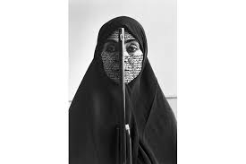

235. Rebellious Silence, from the Women of Allah series. Shirin Neshat (artist); photo by Cynthia Preston. 1994 CE Ink on photograph.
- Form and Content
- The poem written on the face is in Farsi, the Persian language; the poem expresses piety
- The poe is by an Iranian women who writes poetry on gender issues
- The gun divides the body into a darker and a lighter side
- The gun adds a not of ominous tension in the work
- The work expresses the artist’s duality as both Iranian and American
- Materials
- Black and white photograph
- Context
- Shirin Neshat is an Iranian-born artist, raised in the U.S.
- Chador: a type of outer garment, like a cloak, that allows only the face and hands of Iranian women to be seen
- The chador keeps women’s bodies from being seen as sexual objects
- Westerners could view the work as an expression of female oppression
- Iranians could view the work as an image of an obedient, right-minded women who is ready to die defending her faith and customs
- The work contrasts with stereotypical Western depictions of exotic female nudes in opulent surroundings